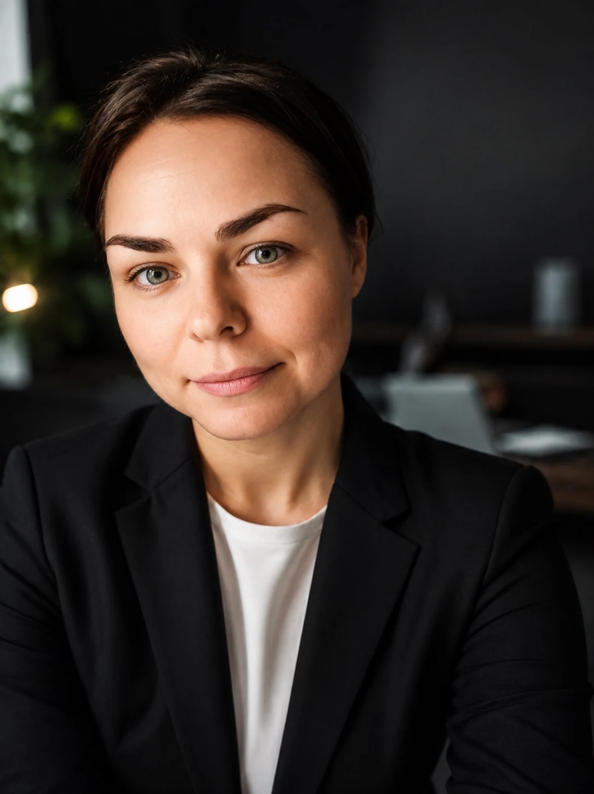

Growth has stalled.
Is it demand, auction dynamics, conversion signals, measurement, platform delivery, or the funnel? I separate symptoms from causes before anyone spends more.
Swiss-watch precision.
Punk spirit.
I figure out why growth isn't working, challenge the obvious explanations, and build a way forward. Fourteen-plus years across digital platforms, international markets, and the messy space between strategy and execution.

When the dashboard looks fine but the business isn't growing, I start asking different questions.
Is it demand, auction dynamics, conversion signals, measurement, platform delivery, or the funnel? I separate symptoms from causes before anyone spends more.
Where can you realistically launch, how much can you spend, what needs to be verified, and which constraints will appear first?
Account suspensions, policy restrictions, certification, allowlisting, fragile account architecture. I work through the actual constraints, not around the rules.
I publish the research I wish existed when a campaign stops making sense. Not thought leadership for its own sake. Working models for difficult decisions.
What changes when AI becomes part of the operating system rather than another tool in the stack?
Read research ↗Why an approved ad can still struggle to reach the auction — and how to investigate without jumping to the wrong conclusion.
Explore AdsWizards ↗Beyond theoretical reach: assessing what a market can realistically absorb once demand, policy, and delivery constraints are taken into account.
Explore the research ↗A practical approach to market entry, account architecture, verification, and scaling under platform restrictions.
See the practice ↗Professional experience and CV: Elena Leonova.
Managing Partner. Independent advisory and applied research in growth diagnostics, international acquisition, platform policy and advertising infrastructure. Projects across regulated and platform-sensitive industries.
International market launches, complex growth cases, platform escalations and internal systems. Led expansion initiatives across 10+ markets; on one digital health project, monthly media investment grew from $67K to $335K in six months.
Led a team of up to nine specialists and oversaw a client portfolio representing approximately $10M in annual advertising spend. Built processes, developed people, and managed complex client delivery.
Worked inside the advertising platform: client advisory, unusual cases, escalations, specialist coordination, and training. A foundation in how platforms actually operate.
I like problems that resist the standard explanation. The kind where another round of optimization won't fix what is structurally wrong.
I work across business questions, advertising platforms, data, and the people who have to make the system run. I value clear reasoning, useful evidence, and solutions that survive contact with reality.
A role, a project, a knot worth untangling — I'm open to a good conversation.